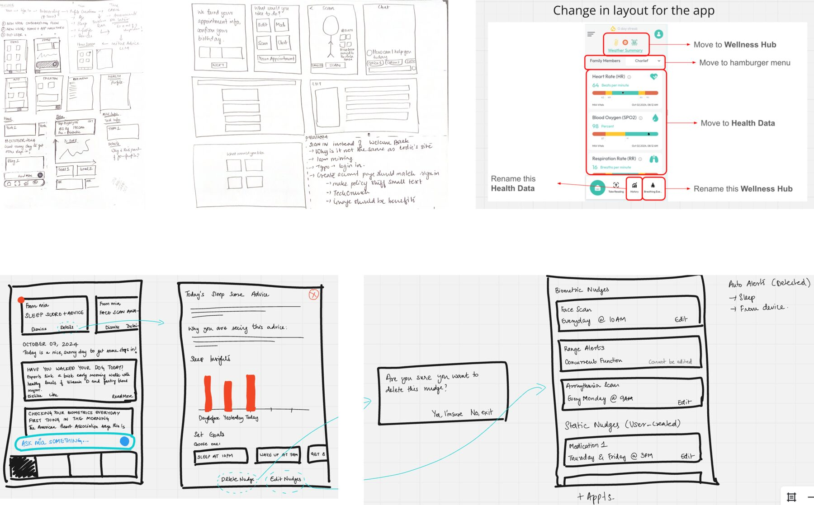
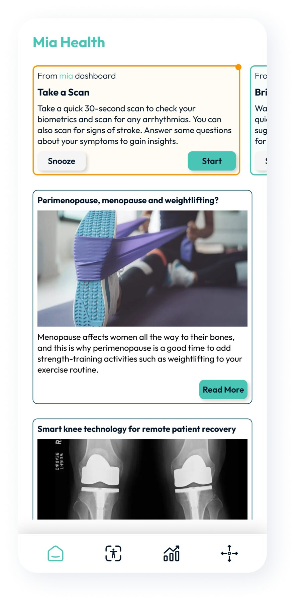
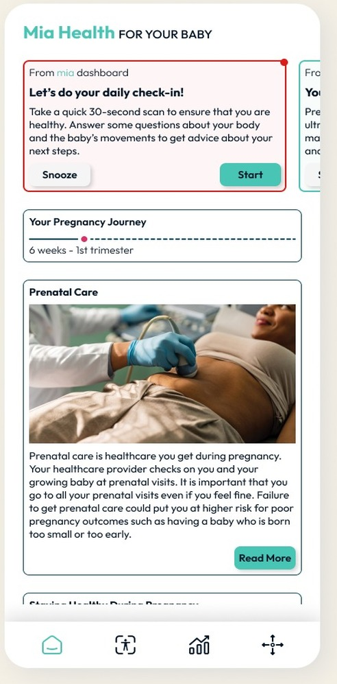
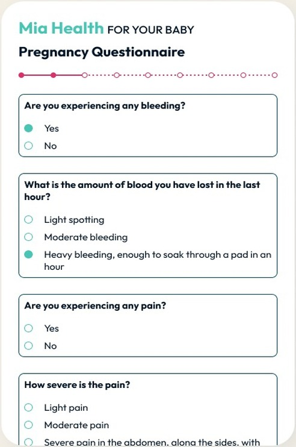

Objective
Improving user retention, adapting designs to different demographics
The Problem
A homepage of numbers, and nowhere to go next
Mia Health is a wellness platform that provides actionable insights based on a user's biometrics, history, and trends. The brand marketed a single app two ways: as a consumer app for individuals, and as a population-management tool for organizations. But the homepage was lackluster — just recent scan results, with no clear goal or next action. Users frequently dropped off after one scan and forgot to return, which meant the trend algorithm had too little history to give anything beyond generic advice. The app's color and typography also failed to meet mobile accessibility standards, which mattered given who was using it.
Old app homepage.
My Role & User Research
As the sole designer, I was responsible for revamping the app end to end — addressing unmet customer needs, conducting research, designing, prototyping, and testing — while working within the existing framework and brand guidelines, alongside the research/AI team and the frontend and backend development teams.
User interviews surfaced the main issues: the homepage was just numbers, which people could already get from their wearables, and it was easy to forget to scan every day — which was crucial for the app to actually track biometric trends. And not every user had a wearable to begin with.
The Solutions
I sketched several directions and landed on a layout built around a nudge carousel that adapts to a user's recent numbers, alongside articles and content reflecting their current biometric status. For someone with rising blood pressure, for example, the app could surface low-sodium diet articles and nudge them toward a quick hypertension assessment.
This solved several problems at once, and it freed up room to move raw biometrics to a secondary menu item — the focus shifted to recommendations for the user, not just their numbers. I also grouped scans into modules addressing specific categories like cardiac health, brain health, and metabolic health.

Adapting Across Demographics
For a user in their 50s going through menopause, recommended articles cover topics relevant to what they're facing, and nudges suggest lifestyle changes suited to that stage of life.
For a user who is pregnant and has logged their last menstrual period, the homepage instead shows relevant pregnancy articles, a pregnancy journey tracker, and nudges reminding them to complete their daily check-in — a gamified touch that helps people log symptoms consistently.


Nudges are color-coded by priority and urgency: green for a low-priority task, amber for a medium-priority task where scan results inform a recommendation, and red for a high-priority task where results are directly pertinent to the app's core function and require attention.
For a user with a high-risk pregnancy, the daily check-in includes a symptom questionnaire designed to rule out an emergency. If a red flag comes up — for example, the user reports bleeding in the last hour — the questionnaire stops and the user is directed to seek emergency help immediately.
